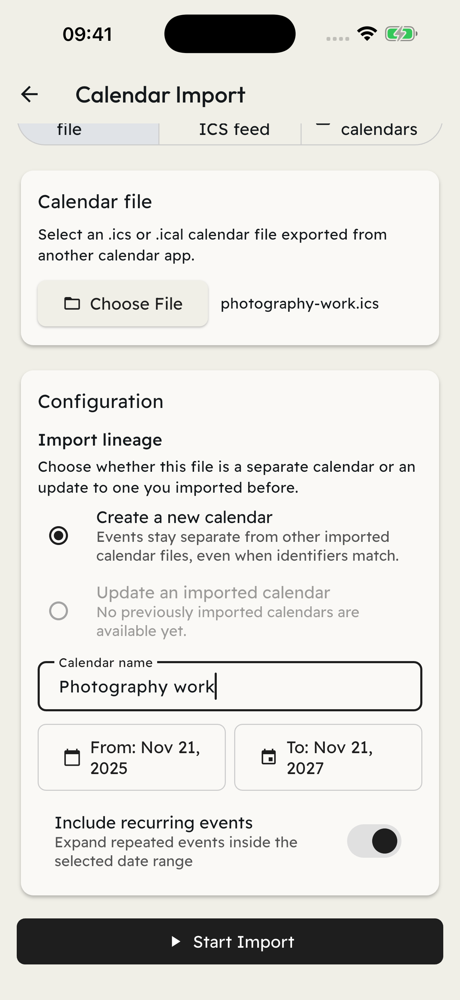
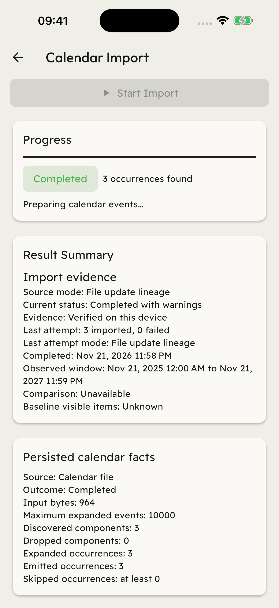
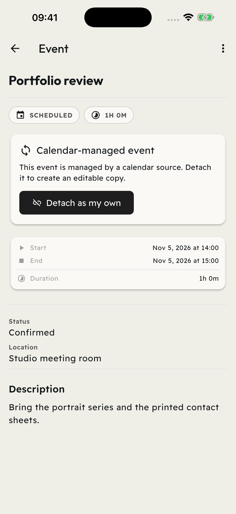

Somewhere in your calendar, there may still be an entry for your first paid photography job. At the time, you needed an address and a reminder. Today, that date might bring back the nerves before the shoot, or the moment you realized someone would pay you to do work you loved.
Calendars collect these small records as we go. If you're an artist, freelancer or entrepreneur, yours may hold years of projects and introductions. A family calendar might hold the dates of a first school play or a much-needed holiday. You don't have to have shared those moments online for them to be worth revisiting.
SynDiary gives you a way to bring those events into your personal timeline. Start with a calendar you already have, find a period you'd like to revisit, and add your own recollections to the moments that matter.
Today, you can do this by importing an exported calendar file. Live Google Calendar feeds and direct device-calendar importing are coming in the next release. Here's how to get started with the file import available now.
Start with a chapter you want to revisit
Choose a calendar and a period you know well. Your first year working for yourself, perhaps, or a summer of family trips. Familiar events give you a useful way to check the import, and somewhere to begin remembering.
-
Export the calendar you want to revisit. In Google Calendar on a computer, find the calendar under "My calendars", open its menu, choose "Settings and sharing", then "Export calendar". To download calendars together in a ZIP, use "Settings" → "Import & export" → "Export". Google's mobile Calendar app doesn't offer export, and work or school accounts may restrict it. See Google's export instructions.
If you use Apple Calendar on a Mac, export an individual calendar as an
.icsfile. Apple's calendar export guide explains the available formats. For SynDiary, choose a calendar file rather than an Apple Calendar backup archive. -
Put the file within reach on your phone. Save or transfer it somewhere you can open through the phone's file picker. SynDiary accepts
.icsand.icalfiles, plus supported ZIP archives containing calendar files. -
Open your import in SynDiary. Go to "Settings" → "Import your memories". Under "One-time imports", choose "Calendar". Keep "Calendar file" selected and tap "Choose File" to select your export.
-
Give it a name you'll recognize. Under "Import lineage", choose "Create a new calendar". Enter a name such as "Photography work" or "Family calendar". This names a separate imported calendar inside SynDiary, so you can find it again when you want to update it. Your calendars in Google or Apple Calendar stay unchanged.
-
Choose how far back to go. Use the "From" and "To" controls to select your dates. The default range starts one year ago and ends one year ahead, so change it if you want to revisit an earlier chapter. Leave "Include recurring events" on to include repeated events within your chosen range.
-
Tap "Start Import", then review what came across. If a ZIP contains several calendars, SynDiary asks you to choose one. When the import finishes, check the "Result Summary" and any warnings. Those warnings help you spot anything that needs attention before you start exploring.




Looking further back
If you've kept a digital calendar for years, it's tempting to bring everything in at once. Start by checking what your export actually contains. SynDiary can import events in the file within your chosen dates and its import limits. It can't recover appointments your calendar provider no longer includes in the export.
A fifteen-year-old account may hold a long history, but its age alone doesn't guarantee fifteen years of events. Check for dates you remember, then choose the period you want to import.
Repeated appointments need a little extra care. SynDiary works out their individual occurrences within your selected range. If it cannot fully do that for an import, it stops the import and asks you to review the recurrence rules, time zone or dates. Large files and unsupported archives may also be refused. Keep your original export so you can review the settings and try again.
Add the part your calendar couldn't know
"Portfolio review, 2 pm" tells you where you were. You might remember the advice that finally helped you finish a project, or the person who encouraged you to show your work.
Imported events appear in SynDiary's timeline. Open an event to see its details. To add your own words to a calendar-managed event, choose "Detach as my own" and confirm. SynDiary creates an editable personal copy and hides the calendar-managed original. You can then edit the copy's description to record what you remember.
That copy is yours to develop. Later calendar imports won't update it as a calendar-managed event, and your edits won't change the original appointment in your calendar app. You keep the date as a starting point, with room for your own account of what happened.


Come back with more memories
You can return whenever you have a newer calendar export. A file import captures the calendar at the time of export; it doesn't automatically pick up later changes.
To update a calendar you've already imported, open Calendar Import, choose the new file and select "Update an imported calendar". Pick the matching calendar from the list, review the dates and tap "Start Import".
SynDiary can then add new events and apply supported changes to existing calendar-managed events. Selecting the matching calendar matters. If you choose "Create a new calendar" instead, SynDiary keeps a separate copy, even when the files contain matching events.
You can also decide what you want to see. An event missing from a later file won't automatically disappear from SynDiary. To hide a calendar-managed event, use "Hide from SynDiary" when offered by the removal flow. If you change your mind, restore it through "Settings" → "Import your memories" → "Hidden items". Hiding keeps the data so you can bring it back; it doesn't permanently erase it.
More ways to bring your story together
The next SynDiary release will bring live Google Calendar feeds and direct imports from the calendars on your device. You'll have more ways to bring calendar events into your timeline, without exporting a file each time.
You can start exploring your history today with a calendar file. Choose a year you remember fondly, or one that passed in a blur. Bring those events into SynDiary and see what comes back to you. A brief appointment title might be enough to recall the first conversation with a future collaborator, or a trip you'd almost forgotten.
SynDiary processes calendar file imports on your device, with no SynDiary account required and no SynDiary server storing your entries. Optional cloud AI, sharing, exports and operating-system backups remain separate choices that can move data off the device.
Your calendar kept the date. Now you can keep what it meant.